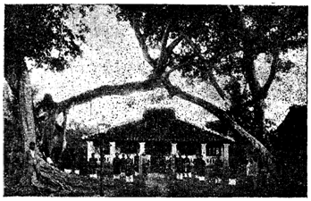

CÂY DA BẾN NGỰ
Tương truyền: Khoảng năm Đinh-Vị 1787, chúa Nguyễn-Phúc-Ánh đồn binh tại Nước-Xoáy (Hồi-Oa-thủy), ẩn náu tại xã Tân-Long (nay là xã Long-Hưng) thuộc vùng Lấp-Vò. Hai chữ "Long-Hưng" chính là do Nguyễn-Vương sau đó đặt tên lại.
Trong khi đình trú tại đây, toan mưu phục nghiệp, Nguyễn-Vương thường đến dưới cội Da, cạnh mé rạch Long-Hưng để câu cá. Nhân đó, dân chúng tôn kính gọi nơi ấy là "Cây Da Bến Ngự".
Nay cội Da đã bị đốn mất, nhưng gốc da to lớn khoảng gần đây, vẫn còn ngã nằm bên mé rạch Long-Hưng.
Đốc Phủ-Sứ Nguyễn-Đăng-Khoa khi làm quận-trưởng quận Sa-Đéc (khoảng năm 1926) cảm đề hai bài vịnh lúc Nguyễn-Vương ngự nơi Long-Hưng:
Anh hùng nguồn Nguyễn ứng Long-Hưng,
Đế nghiệp trời Nam đã định chừng.
Đất trổ cây Da làm bến ngự,
Người hô tung nhạc hạ trời xuân.
Gió thanh ngút tỏa mùi hương khí,
Đất Việt lâm chầu vị quí nhân.
Tiên chỉ hoành sơn là đế vượng,
Triệu tường con cháu trổ long lân.
Tiên-Vương bến Ngự hãy còn đây,
Cảm nổi cây da chạnh nổi ngài.
Trương tán đứng chờ trong gió bụi,
Phơi râu hầu đón giữa trời mây.
Tiếng nhơn thấp thoảng trên nhành đó,
Dấu đức còn âu dưới cội này.
Nắng lửa ai phòng binh bổ với,
Căm hờn nắng lửa thói tà tây.
Khoảng năm 1958, khi Sa-Đéc hãy còn là một quận của Vĩnh-Long, vào ngày 8 tháng giêng, trong dịp đi kinh-lý, cố Tỉnh-Trưởng Khưu-Văn-Ba được các bô lão và dân chúng xã Long-Hưng mang đến tặng một cái lư cổ bằng đá ong, di tích của vua Gia-Long. Nhân đó, cố Tỉnh-trưởng Khưu-Văn-Ba cho xây cất tại "Cây-Da Bến-Ngự" một ngôi miếu lấy tên là "Cao-Hoàng Thái-Miếu".
Muốn đến Cây-Da Bến-Ngự phải đi đường thủy, từ tỉnh lỵ Sa-Đéc theo rạch Sa-Đéc đến Vàm Nước-Xoáy, đến xã Long-Hưng độ 13 cây số ngàn.
LĂNG ÔNG BỎ HẬU
Ông Nguyễn-Văn-Mậu tự là Hậu, khi xưa từng cưu mang giúp đỡ Nguyễn-Vương (Phúc-Ánh), lúc thất cơ, ẩn náu tại làng Long-Hưng nên được Nguyễn-Vương tâng trọng xem như ông Bỏ (Cha nuôi).
Lăng ông Bỏ Hậu được phái đoàn do vua Gia-Long sai vào, xây cất trong năm Gia-Long thứ 8 (Kỷ-Tị 1809) tại xã Long-Hưng, cách "Cây-Da Bến-Ngự" độ hai ngàn thước. Lối kiến trúc không có chi huê mỹ, tuy nhiên cũng đánh dấu được giai đoạn ông Bỏ Hậu góp phần vào công nghiệp lập quốc của Nguyễn-Vương.
Bà Đốc-Phủ Phải ở Chợ-Lớn mấy mươi năm trước đây, vốn là chắc gái của ông Bỏ Hậu, và đồng đội ông Bỏ Hậu hãy còn trong làng Long-Hưng.
Đốc Phủ-Sứ Nguyễn-Đăng-Khoa có thơ vịnh lăng:
Vào lăng ông Bỏ, cảm tình ông,
Thấy cảnh ai không động tấm lòng.
Đất nghĩa tuyết dầm meo móc đượm,
Nền nhơn sương đắp cánh hoa vun.
Vừng Mây làm giúp cây tàn lọng,
Ngọn gió đưa dùm tiếng đức phong.
Thức nguyệt ánh đèn soi tỏ rạng,
Cho lòng trời biết chút mồ trung.
Về tiểu sử ông Bỏ Hậu, xin quý bạn đọc xem thêm ở chương "Giai thoại": "Chuyện ông Bỏ và đức Gia-Long".
LĂNG QUAN LỚN SEN
TỨC KINH-MÔN QUẬN-CÔNG NGUYỄN-VĂN-NHƠN
Tại xã Tân-Đông, thuộc tổng An-Thạnh-Hạ, quận Châu-Thành Sa-Đéc, có lăng quan lớn Sen, tức Kinh-Môn Quận-Công Nguyễn-Văn-Nhơn. Tiểu sử cụ, chúng tôi có trình bày ở phần danh-nhân và về sự tích gọi cụ là "Quan Lớn Sen" xin xem thêm ở phần "Giai Thoại".
Lăng Quận-Công Nguyễn-Văn-Nhơn khi xưa ở gần bực sông hữu ngạn Cửu-Long-Giang thường bị sóng đánh nước xói mà đất lở gần đến lăng, nên trong họ và Hội đồng hương chính đem dời vào nơi xa, ở về chỗ Cái-Bè cạn.
Lăng xây cất lại và làm lễ khánh táng vào ngày 17 tháng ba năm Canh-Thân 1920.
Nay muốn viếng lăng, phải đến ấp Khánh-Thuận, làng Tân-Đông (trước là Tân-Khánh), tổng An-Thạnh-Hạ, cách tỉnh lỵ Sa-Đéc hơn 8 cây số ngàn.
Giữa miếng đất rộng có rào bao phủ, hai ngôi mộ của vợ chồng cụ Quận-Công nằm song song nhau. Trên tấm bình phong phía sau, có khắc bài thơ của vua Thiệu-Trị ngự chế trong năm Bính-Ngọ 1846.
Trước cửa của lăng có đôi liểng:
"Tứ thế nhân luân thiên lũng ốc,
Quốc gia trung hiếu lưỡng âm phong."

Đền thờ Kinh-Môn Quận-Công Nguyễn-Văn-Nhơn (tục gọi là Quan Lớn Sen)
SỰ TÍCH MIẾU VĂN-THÁNH
Vùng Long-Hồ-Dinh khi xưa có đến hai nơi được thiết lập miếu Văn-Thánh, một ở tỉnh lỵ Vĩnh-Long(1), một ở vùng Cao-Lãnh vốn là đất tỉnh Sa-Đéc ngày trước.
Miếu Văn-Thánh tỉnh Sa-Đéc xưa, thiết lập ở làng Mỹ-Trà (Cao-Lãnh) thuộc tổng Phong-Thạnh, vốn trước kia thuộc về huyện Vĩnh-An, phủ Tân-Thành. Vì thuở cựu trào dinh phủ Tân-Thành đóng tại làng Mỹ-Trà, nên nền Văn chỉ cũng xây cất trong làng ấy, đến nay cũng vẫn còn dấu tích.

Văn-Thánh miếu thờ Đức Khổng-Tử
Người đề xướng việc xây cất miếu Văn-Thánh là viên Tri-phủ Hồ-Trọng-Đính. Khởi công xây cất từ ngày mùng 4 tháng 6 âm-lịch vào năm Đinh-Tỵ (1857) qua ngày 28 tháng 6 năm Đinh-Tỵ (1857) thì hoàn tất.
Đến năm Tự-Đức thứ 31 (Mậu-Dần 1878), vị Ban-biện là Phạm-Văn-Khanh có đứng ra sửa sang lại. Nơi miếu có nhiều đôi liểng được truyền tụng:
I
"Văn tại tư hồ, thể dụng lục kinh thiên cổ địa đạo:
Thánh chi thời giả, tôn thân vạn cổ đế vương sư."
II
"Kinh thiên vĩ đại tam tài chuẩn;
Kế vãng khai lai vạn đại tôn."
III
"Cao sang ngưỡng chỉ, cảnh hành hành chỉ;
Giang hán trạc chi, thu dương bộc chi."
IV
"Lễ nhạc điển chương, bị nhất vương đại pháp;
Văn hạnh trung tín, thì tứ giáo hoàng mô."
V
"Hiếu tử trung thần, vạn cổ can thường tư trụ thạch;
Danh nhân khôi sỉ, niên phong vận thử quyên dư."
VI
"Giáo tường vật tắc dân di, tổ cụ cá trung vương thánh;
Lý quán thiên kinh địa nghĩa, cao siêu phương ngoại thần tiên."
VỊNH ÔNG-ĐỐC
VÀ MỘ ÔNG ĐỐC-BINH THUẬN
Cách Châu-Thành Sa-Đéc độ trên cây số ngàn, về ấp Phú-Hòa, làng Tân-Phú-Đông, qua cầu Rạch-Rắn, quẹo tay trái đi theo bờ rạch thì đến Vịnh Ông-Đốc. Vịnh Ông-Đốc nào đây? Kể ra thì trong có biết bao sông rạch đều mang tên là Ông-Đốc. Và điều cần là phải biết rõ xem đó có ý nghĩa gì. Vì không phải tất cả sông rạch mang tên Ông-Đốc dù là cùng chung một nguồn gốc. Chẳng hạn như sông Ông-Đốc ở Bạc-Liêu, Ông-Đốc đây tức là Ông Đốc-Binh Nguyễn-Tấn-Huỳnh, mà chúng tôi đã có trình bày trong quyển "Bạc-Liêu Xưa và Nay". Còn như Vịnh Ông-Đốc ở Sa-Đéc, chính là để kỷ công Ông Đốc-Binh Thuận.
Cũng như những tên sông rạch mang tên Ông "Chưởng", cũng đều chẳng phải chung một nguồn gốc mà ra. Như vàm Ông Chưởng, làng Ông Chưởng ở An-Giang, là để lưu danh Ông Chưởng-Cơ Lễ Thành-Hầu Nguyễn-Hữu-Cảnh. Còn như đập Ông-Chưởng ở làng Bình-Luông-Tây, Gò-Công, lại là di tích kỷ công ông Chưởng-Cơ Mai-Tấn-Huệ.
Xin nhắc trở lại về Vịnh Ông-Đốc ở Sa-Đéc, gọi là Vịnh Ông-Đốc, vì bên tả ngạn vịnh này có ngôi mộ của vị Đốc-Binh triều Tự-Đức. Chúng tôi chưa tra cứu được họ ông là gì, chỉ được biết tên ông là Thuận, tục gọi là Đốc-Binh Thuận. Xưa kia ông dũng cảm cầm binh kháng Pháp. Khi xông trận, ông bị gãy một chân, thương tích trầm trọng nên chẳng bao lâu thì ông mất. Lúc chôn cất ông, người ta làm một cái chân bằng sáp thế vào.
Mộ ông ở về ấp Phú-Hòa, làng Tân-Phú-Đông như đã nói ở trên. Cái Vịnh Ông-Đốc đến nay còn lưu truyền. Ấy là đặt từ thời trước để nhắc nhở tưởng niệm đến ông vậy.
Con cháu của ông, có người con út tên Chánh, trước có giúp việc Sở Trường-Tiền (tức ty Công-Chánh) tỉnh Sa-Đéc nhưng cũng đã qua đời từ lâu, không ai nối dòng.
ĐÌNH VĨNH-PHƯỚC
VÀ LINH-VỊ CHƯỞNG DINH QUẬN-CÔNG
TỐNG-PHƯỚC-HÒA
Đình Vĩnh-Phước tục gọi là Đình Gạo, một ngôi đình nhỏ đã có từ lâu, được xây cất lại hồi năm 1904. Ngày nay, dân chúng gọi là đình Vĩnh-Phước, nay trở thành ấp Vĩnh-Hiệp (xã Tân-Vĩnh-Hòa). Ngôi đình rộng lớn khang trang, lộng lẫy, phải là nơi ngự trị của linh thần khói hương thường nhật. Thờ Thần Bổn-Cảnh Thành-Hoàng do vua Tự-Đức đệ ngũ niên phong sắc.
Tục lệ hằng năm đến ngày 17-7 âm-lich tổ chức cúng Thần long trọng và phải cúng một con trâu sống, và có năm hát Bội để tạ Linh-Thần.

Đình-Thần Vĩnh-Phước bên trong thờ linh-vị Quận-Công Tống-Phước-Hòa
Đặc biệt Đình này còn thờ quan Thượng-Đẳng Quận-Công Tống-Phước-Hòa. Trước kia vị Thần này có miếu riêng, vì lâu đời phải hư, nên thỉnh sắc về thờ chung trong đình Vĩnh-Phước. Sắc phong ngày 24-9-1823, đời Minh-Mạng đệ tam niên. Hằng năm cúng vào ngày 15-1 âm-lịch.
Đồng bào địa phương rất tin tưởng nơi sự hiển linh của ngài. Mỗi lệ cúng có đủ mặt thân hào nhân sĩ đến dự đông đảo. Một vị khai quốc công thần như Ngài danh vang bốn bể sử sách đã ghi tạc tên tuổi. Ngày nay đất Sa-Đéc hữu phước được thờ Ngài khói hương không dứt, truyền tụng muôn đời với tinh thần tồn cổ.
NGÔI MỘ BÀ DƯƠNG
Cách ba cây số về phía tây Châu-Thành Sa-Đéc ngày nay còn ngôi cổ mộ, nằm trên một gò đất cao ráo rộng chừng 500 thước vuông, chung quanh có nhiều cây cối mọc um tùm, cảnh vật rất nên huyền ảo. Ngôi mộ bao quanh những tảng đá xanh to lớn, rêu phong cỏ mọc, trước đầu mộ có khắc những hàng chữ nho ghi lại năm tháng, tên họ người quá vãng, nhưng lâu ngày bị tuyết sương mưa gió phai mờ, chữ còn chữ mất.
Theo các bô lão địa phương kể lại, lúc Gia-Long tẩu quốc đi ngang qua Sa-Đéc,trên đường về Bảo-Tiền Bảo-Hậu, bà Dương thường nấu cơm cháo thết đãi ba quân tướng sĩ, và chẳng những bà đóng góp công lao tiền của giúp đỡ nhà Vua trong lúc dừng chơn ở Sa-Đéc. Việc làm của bà, thể hiện lòng yêu nước lớn lao, được nhà Vua khen tặng là: "Háo-nghĩa khả gia".
Tương truyền, ngôi mộ của bà trước đây mấy mươi năm, những đêm thanh vắng, thường xuất hiện một cặp rắn thần màu ngũ sắc, có giọng gáy thanh tao vang cả đồng ruộng. Đồng bào hiếu kỳ đến rình xem, quả là một cặp rắn thật to, mồng đỏ, từ trong núm mồ ngóc đầu lên gáy, ai nấy cho là việc lạ. Theo người biết chuyện, cho đó là binh gia ngày xưa hiện thân đến hầu bà là người có công giúp đỡ cho quân binh tướng sĩ trong lúc quốc nạn. Khí thiêng sông núi, vong linh tử sĩ còn phưởng phất nơi mảnh đất linh, nên mới ứng hiện những sự việc cho thế gian thấy chuyện linh thiêng huyền bí của cõi vô hình. Tiếng rắn Thần dường như nhắc nhở để truy ơn một nữ trung liệt.
Câu chuyện rắn thần xuất hiện và ngôi cổ mộ bà Dương tại Sa-Đéc ngày nay người ta thường nhắc đến ở đám tiệc, trong lúc trà dư tửu hậu.
DINH BÀ ĐÔ
Uy danh cụ Kinh-Môn Quận-Công Nguyễn-Văn-Nhơn, trong tỉnh Sa-Đéc nói riêng, lich-sử Việt-Nam nói chung, không ai là không biết. Lịch sử đời cụ, làm vẽ-vang cho Sa-Đéc và đến nay hãy còn di tích khá nhiều trong tỉnh. Chẳng những cụ đã để tên vào lịch sử, mà con cái của cụ cũng lừng danh, và cũng còn lưu di tích một nơi ở Sanh-Nhiên, tục gọi Dinh Bà-Đô.
Vì sao có tên Bà-Đô? Nguyên người con trai trưởng của cụ Kinh-Môn Quận-Công được triều đình chú ý vì tài đức, nhất là vì trong vòng uy danh của cụ Kinh-Môn, nên nhà vua gã Công Chúa cho. Con trai cụ Kinh-Môn Quận-Công nghiễm nhiên là Phò-Mã, phong chức Phiêu-Kỵ Đô-Úy, tước Đức-Nhuận-Hầu. Vì chồng là chức Đô-Úy, nên người ta quen gọi Công-Chúa là Bà-Đô.
Tuy thuộc hàng cành vàng lá ngọc, nhưng chịu ảnh hưởng của chồng và cha chồng, Bà-Đô sống bình dị, thanh đạm, giàu lòng nhân đức, bủa nhuần ân nghĩa khắp vùng. Do đó, tăm tiếng Bà-Đô vang truyền.
Vợ chồng bà cất dinh ở rạch Sanh-Nhiên. Dân chúng vì ngưỡng mộ công đức của vợ chồng bà, nên gọi tên rạch bằng tất lòng tôn kính tưởng niệm là Rạch Bà-Đô. Dinh thự của vợ chồng bà thì dân chúng gọi là Dinh Bà-Đô.
Thấy dân chúng tỏ lòng mến mộ, vợ chồng bà càng thêm cảm khích, chăm thi ân bố đức hơn trước nữa, mua chuộc cảm tình càng ngày càng sâu đậm. Đến khi Bà-Đô mất, người người đều thương tiếc.
Thời gian qua, vật đổi sao dời, dưới triều Minh-Mạng, Tự-Đức, cựu trào cho thiết lập phủ Tân-Thành tại nền cũ Dinh Bà-Đô thuở trước. Rồi đến đời Pháp thuộc, người ta cất Chợ Cũ Sa-Đéc tại ấy. Dần dần về sau, chốn cũ Dinh Bà-Đô lại biến thành chỗ lò heo Vĩnh-Phước.
Tiếng Bà-Đô chìm trong quên lãng. Để lưu dấu vết, tưởng niệm người xưa đã khuất trong hương khói tôn sùng của dân gian, nhờ lòng nhân đức, tên gọi Bà-Đô chúng tôi xin nhắc lại nơi đây.
Những khi du khách qua Rạch Sanh-Nhiên, xin biết cho rằng nơi đó từng được gọi là Rạch Bà-Đô và có Dinh Bà-Đô tọa lạc nơi vùng ấy. Âu cũng chút lòng hoài niệm người xưa cảnh cũ.
KINH ĐỐC-PHỦ HIỀN, XÃ TÂN-PHÚ-TRUNG
Lúc trước đường sá chưa mở mang, dân chúng xã Tân-Phú-Trung muốn đi chợ Sa-Đéc phải bơi xuồng chèo ghe theo con rạch Cần-Thơ, từ chợ xã Tân-Phú-Trung đi theo một vòng cung qua Chợ-Quán, Bình-Tiên... rồi mới đến Sa-Đéc. Vì đoạn đường dài trên 7 cây số, nên họ phải đi từ 4, 5 giờ sáng.
Đến năm Kỷ-Dậu 1909, có người nghĩ ra cách thâu ngắn đoạn đường trên bằng một ngã đi tắt, gần hơn tiện hơn. Người đó là quan Đốc-Phủ Lê-Quang-Hiền làm việc tại tỉnh Sa-Đéc. Kẻ viết bài này đã cố gắng tìm hiểu về lý lịch cùng thân thế, sự nghiệp của ông Lê-Quang-Hiền, người đã có công rất nhiều cho đồng bào xã Tân-Phú-Trung ngày nay còn nhắc.
Đào còn kinh này, ông đã qui tụ trên 5000 tráng đinh ra sức đào rồng rả trong ba tháng, dụng cụ đào kinh là len, xuổng, một dụng cụ thô sơ và thông dụng của đồng bào nông-thôn. Con kinh bắt nguồn từ ngã tư Chợ xã Tân-Phú-Trung thẳng ra đến Ngã-Cạy, tại đây sẽ giáp giới với Ngã-Cũ, qua cầu Rạch-Rắn rồi đến Chợ Sa-Đéc. Con kinh đào này bề ngang 10 thước, sâu 4 thước, và nếu so với bề dài của Rạch Cần-Thơ thì con kinh Đốc-Phủ-Hiền chỉ dài khoảng 5 cây số, thật là giản tiện cho dân chúng trong sự lưu thông, ngoài ra còn giúp thêm nước cho ruộng lúa hai bờ kinh rất nhiều.
Để nhớ ơn ông, người ta bèn đặt tên con kinh mới là Kinh Đốc-Phủ-Hiền.
Hiện nay vì nước chảy quá mạnh, nên càng ngày kinh càng lở ra rộng có đến 30 thước.
Lúc trước trên bờ kinh, về phía tay mặt có trồng một hàng cây sao rất cao lớn, có cây cao đến mấy mươi thước, tục gọi là hàng sao Một. Nay đất lở đi, chỉ còn lại bộ gốc rễ to lớn dưới mé kinh như để chứng minh sự vần xoay của Tạo-Hóa.